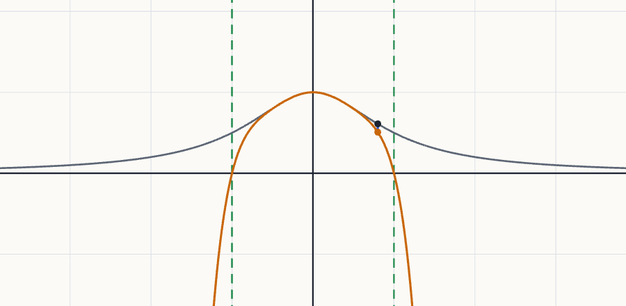

Aplicaciones a series: series de Taylor y funciones analíticas
Qué ocurre cuando el polinomio de Taylor crece sin parar: una función se convierte en una «suma infinita» de potencias que se puede derivar sumando a sumando, y de la que se sacan desarrollos nuevos sin calcular derivadas.
0Antes de empezar U p.113
En 3.1 aproximabas una función con un polinomio de grado $n$. Aquí te preguntas: ¿y si no paro nunca? Si sigues añadiendo términos $\frac{f^{(n}(x_0)}{n!}(x-x_0)^n$ para siempre, obtienes una serie de potencias. Para las funciones «buenas» (las analíticas: polinomios, $e^x$, $\operatorname{sen}x$, $\cos x$, $\ln$…) esa suma infinita vale exactamente la función dentro de su intervalo de convergencia (por ejemplo, $\ln(1+x)$ coincide con su serie sólo en $(-1,1]$, aunque $\ln(1+x)$ existe para todo $x>-1$). Como una serie de potencias se comporta como un «polinomio infinito», se puede derivar sumando a sumando y combinar con otras series: así se obtienen desarrollos nuevos sin derivar una y otra vez.
U p.113Qué necesitas saber ya
- Polinomio de Taylor, resto de Lagrange y desarrollos básicos de $e^x$, $\operatorname{sen}x$, $\cos x$ (tema 3.1). U pp.107-111
- Series numéricas: la serie geométrica, la condición «si $\sum a_n$ converge, entonces $a_n\to0$», la armónica y el criterio de Leibniz (tema 1.3). U pp.36-41
- Regla de la cadena y L'Hôpital (tema 2). U pp.79, 82
Sí entra: series de Taylor y funciones analíticas (U §3.2.3, pp. 117-119); derivación término a término de series de potencias (U Prop. 3.3 y Teor. 3.1, p. 116), porque la usan E 3.18 y los exámenes; y el radio de convergencia. El criterio es el cronograma 2026-27. El radio viene de U §1.5 (pp. 67-70), cuyas series y sucesiones funcionales el cronograma excluye; pero el radio entra porque lo usan E 3.17-3.20 y el Tema 3 (series de Taylor), y además aparece en X (pp. 38, 46, 96, 99, 105, 112, 126). Se repasa en el apartado 2.
No entra (va colapsado en «Fuera de examen»): convergencia uniforme y derivación de sucesiones y series de funciones (U §3.2.2, pp. 113-115) y los ejercicios E 3.15–3.16 (y la parte de convergencia uniforme de E 3.17). X sí tiene preguntas de convergencia uniforme (p. 142 Sept. 2018, p. 135 Feb. 2017, p. 144 Feb. 2018, pp. 22, 26, 74, 115-116), pero son de U §1.5, excluida por el cronograma: por eso no se resuelven aquí.
La inclusión de la derivación de series de potencias como materia de examen es una decisión de este resumen (basada en E 3.18 y X p. 112); conviene confirmarla con el equipo docente.
Mapa del tema
| Apartado | Qué contiene | Dónde está |
|---|---|---|
| 1 Serie de Taylor | del polinomio a la serie; ejemplos $e^{2x}$, $\cos x$; ¿cuándo suma la función? | U pp.117-118 · S pp.754-757 · L pp.664-668 |
| 2 Radio de convergencia | cociente, raíz y extremos (repaso) | U §1.5 pp.67-70 |
| 3 Derivar series de potencias | mismo radio, derivada término a término | U p.116 |
| 4 Funciones analíticas y series nuevas | sustitución, derivación, tabla de series básicas | U pp.117-119 · S p.762 |
| 5 Fuera de examen | sucesiones y series de funciones; E 3.15–3.17 | U pp.113-115 · E pp.100-104 |
| 6 Ejercicios | E 3.18, 3.19, 3.20 con receta | E pp.104-107 |
| 7 Ejemplos propios | 4 ejemplos, de fácil a difícil | propio |
| 8 Examen | 8 problemas reales de X (9 preguntas) | X |
| 9 Chuleta y comprobación | fórmulas, lista | síntesis |
Qué se pide en los ejercicios y en el examen
(A) Calcular el radio (y el intervalo) de convergencia de una serie de potencias. (B) Derivar una serie conocida para obtener otra (E 3.18). (C) Escribir la serie de Taylor de una función en un centro dado: encontrar el patrón de las derivadas (E 3.19, 3.20, X pp.142, 145). (D) Usar el resto de Lagrange para calcular un valor con un error dado (X pp.145-146, tema 3.1).
1De polinomio a serie: la serie de Taylor U p.117
El polinomio de Taylor de orden $n$ copia a $f$ en $x_0$ hasta la derivada $n$. Cuanto mayor es $n$, más derivadas copia. Si le dejas crecer sin límite, queda una lista infinita de sumandos con exactamente las mismas fórmulas para los coeficientes. Es como seguir añadiendo decimales a $\pi$: cada aproximación mejora la anterior, y «la suma infinita» es el número exacto (si todo va bien).
U p.117Sea $f$ una función con derivadas de todos los órdenes en $x_0$. Su serie de Taylor en $x_0$ es $$\sum_{n=0}^{\infty}\frac{f^{(n}(x_0)}{n!}\,(x-x_0)^n=f(x_0)+f'(x_0)(x-x_0)+\frac{f''(x_0)}{2!}(x-x_0)^2+\cdots$$ Si $x_0=0$, se llama también serie de Maclaurin (S y L). «Es el resultado de hacer tender a infinito el orden del polinomio de Taylor.»
U p.117 S p.754 L p.665- Derivadas. $f(x)=e^{2x}$; cada derivada saca un factor $2$ (regla de la cadena): $f^{(n}(x)=2^ne^{2x}$. En $0$: $f^{(n}(0)=2^n$.
- Serie. $\displaystyle e^{2x}\ \longleftrightarrow\ \sum_{n=0}^\infty\frac{2^n}{n!}x^n=1+2x+\frac{4x^2}{2}+\frac{8x^3}{6}+\cdots$
- Radio. $\left|\dfrac{a_{n+1}}{a_n}\right|=\dfrac{2^{n+1}/(n+1)!}{2^n/n!}=\dfrac{2}{n+1}\to0$. Radio infinito: converge para todo $x$.
- Derivadas. $\cos,\ -\operatorname{sen},\ -\cos,\ \operatorname{sen},\ \cos,\dots$ (ciclo de 4). En $0$ valen $1,0,-1,0,1,0,\dots$: las derivadas impares se anulan.
- Serie. Solo quedan potencias pares, con signo alternado: $$\cos x\ \longleftrightarrow\ 1-\frac{x^2}{2!}+\frac{x^4}{4!}-\frac{x^6}{6!}+\cdots=\sum_{k=0}^{\infty}\frac{(-1)^k}{(2k)!}x^{2k}.$$
Hay tres preguntas distintas: (1) ¿cuál es la serie?, (2) ¿para qué $x$ converge?, (3) ¿su suma es $f(x)$? Las dos primeras son cálculo; la tercera es teoría. Larson lo advierte: calcular que la serie de $\operatorname{sen}x$ converge para todo $x$ no prueba que su suma sea $\operatorname{sen}x$; solo que converge «a alguna función». Se necesita que el resto $R_n(x)\to0$ cuando $n\to\infty$.
L p.666Para $e^x$ se comprueba así: si $|x|\le d$, todas las derivadas valen como mucho $e^d$, y la cota de Taylor da $|R_n(x)|\le e^d\frac{|x|^{n+1}}{(n+1)!}\to0$, porque $\frac{x^n}{n!}\to0$ para todo $x$. Para las funciones de este curso U da por buena la conclusión (apartado 4).
S pp.756-757Sea $g(x)=e^{-1/x^2}$ para $x\ne0$ y $g(0)=0$. Se puede comprobar que $g^{(n}(0)=0$ para todo $n$: su serie de Taylor en $0$ es $0+0x+0x^2+\cdots=0$, que converge para todo $x$ pero vale $0$, no $g(x)$. Por eso «tener serie de Taylor» no basta: las funciones que sí la igualan son las analíticas.
P2Radio de convergencia de una serie de potencias U pp.67-70
Una serie de potencias $\sum a_n(x-x_0)^n$ es, para cada $x$ fijo, una serie de números. Lo que cambia es el $x$. El resultado es siempre así: converge en un intervalo centrado en $x_0$ y diverge fuera de él. Es como el alcance de una linterna: dentro del círculo de luz hay convergencia, fuera no; el radio $R$ es el alcance. Justo en el borde ($x_0\pm R$) hay que mirar a mano.
U p.67Sea $\sum a_n(x-x_0)^n$ (centro $x_0$).
- Cociente: si $\displaystyle\lim_{n\to\infty}\left|\frac{a_{n+1}}{a_n}\right|=S$, entonces $R=\dfrac1S$ (con $R=\infty$ si $S=0$ y $R=0$ si $S=\infty$).
- Raíz: lo mismo con $\displaystyle\lim_{n\to\infty}\sqrt[n]{|a_n|}=S$.
Cuál elegir. Si $a_n$ lleva factoriales o productos, el cociente (se simplifican). Si $a_n$ es «algo elevado a $n$» (o a $n^2$), la raíz. Intervalo de convergencia: $|x-x_0|<R$, más los extremos que converjan.
U p.70
Por qué. Para un $x$ fijo, se aplica el criterio del cociente de series numéricas a $\sum|a_n||x-x_0|^n$: la razón de términos consecutivos es $\frac{|a_{n+1}|}{|a_n|}|x-x_0|\to S\,|x-x_0|$. Converge si $S|x-x_0|<1$, es decir, $|x-x_0|<\frac1S$, y diverge si $S|x-x_0|>1$.
Ejemplo mínimo. $\sum\frac{x^n}{2^n}$: la razón es $\frac{|x|^{n+1}/2^{n+1}}{|x|^n/2^n}=\frac{|x|}2$. Converge si $\frac{|x|}2<1$, o sea $|x|<2$; aquí $S=\frac12$ y $R=2$.
Caso $R=0$. $\sum n!\,x^n$ converge únicamente en $x=0$ (U Ej. 1.57, p. 68): para $x\ne0$ el término $n!\,|x|^n$ no tiende a $0$ (el cociente da $(n+1)|x|\to\infty$, es decir, $S=\infty$).
U p.68En $x=x_0\pm R$ los criterios no deciden (el límite vale $1$). Se sustituye el valor y se estudia la serie numérica. Lo primero que se mira: ¿el término general tiende a $0$? Si no, diverge (U Prop. 1.6, p. 36). Si sí, hay que usar otro criterio: armónica (diverge), Leibniz (alternada con $|a_n|\downarrow0$ converge), etc. El ejemplo P1 de abajo tiene un extremo que converge y otro que no.
U pp.36-41, 68-69- No dejar la serie en la forma $(x-x_0)^n$: si aparece $(2x-1)^n$ hay que escribir $2^n\left(x-\frac12\right)^n$ (centro $\frac12$, y el $2^n$ pasa al coeficiente).
- Creer que el radio llega «hasta donde está definida $f$» (se ve en E 3.20).
- Dar por convergente un extremo sin mirarlo, o dar por divergente sin comprobar el término general.
3Derivar una serie de potencias término a término U p.116
Un polinomio se deriva sumando por sumando. Una serie de potencias es un «polinomio infinito», y dentro de su intervalo de convergencia se porta igual de bien: se deriva cada sumando y la nueva serie tiene el mismo radio. Esto es lo que permite obtener $\frac1{(1-x)^2}$ a partir de $\frac1{1-x}$ en un paso.
PProp. 3.3. Si $f(x)=\sum_{n=0}^\infty a_nx^n$ para todo $x\in(-c,c)$, entonces $f$ es derivable en $(-c,c)$ y $f'(x)=\sum_{n=0}^\infty\frac{d}{dx}(a_nx^n)$.
Teor. 3.1. Una serie de potencias define una función infinitamente derivable en su intervalo de convergencia, y sus derivadas se obtienen derivando término a término:
$$\frac{d^p}{dx^p}\left(\sum a_nx^n\right)=\sum\frac{d^p}{dx^p}(a_nx^n)\quad\text{para todo }p.$$
Derivando $x-\frac{x^3}{3!}+\frac{x^5}{5!}-\cdots$ término a término sale $1-\frac{x^2}{2!}+\frac{x^4}{4!}-\cdots$: la derivada de la serie del seno es la serie del coseno.
U p.116El Teor. 3.1 dice «en su intervalo de convergencia». Debe leerse en el interior $(-R,R)$. U llama «intervalo de convergencia» también a conjuntos con extremos (Ej. 1.60: $(-1,1]$), y en un extremo la derivada puede dejar de converger: $\sum\frac{x^n}{n}$ converge en $x=-1$, pero su derivada $\sum x^{n-1}$ no. Lo mismo vale para el resto del apartado: derivar siempre dentro de $|x-x_0|<R$, y mirar los extremos aparte.
U pp.116, 139Punto 3 (falso): que $f_n\to f$ no obliga a que $f_n'\to f'$; contraejemplo, U Ej. 3.11 ($f_n'(0)=1$ pero $f'(0)=0$). Punto 4 (verdadero sólo dentro de $(-R,R)$): la derivada término a término de una serie de potencias funciona en el intervalo abierto; en un extremo puede fallar ($\sum\frac{x^n}{n}$ converge en $x=-1$ y su derivada $\sum x^{n-1}$ no). U no da soluciones: esta es nuestra lectura.
U p.139- Escribir $\sum nx^n$: al derivar $x^n$ el exponente baja a $n-1$.
- El primer sumando ($x^0=1$) es constante y su derivada es $0$: la serie derivada empieza en $n=1$.
- Cambiar el índice sin cambiar la fórmula: $\sum_{n=1}nx^{n-1}=\sum_{n=0}(n+1)x^n$ y no $\sum_{n=0}nx^{n-1}$.
4Funciones analíticas y cómo fabricar series nuevas U pp.117-119
U (p. 117): «Lo más deseable es que la serie de Taylor converja uniformemente a la función que la define en un intervalo que contenga a $x_0$». Aquí, como la convergencia uniforme es material fuera de examen, basta pensar en que la serie converge a $f$ en cada punto de ese intervalo (simplificación nuestra). Las funciones para las que esto ocurre se llaman analíticas. U afirma que las funciones polinómicas, trigonométricas, exponenciales y logarítmicas son analíticas (en su dominio, cerca de cada punto).
U pp.117-118Si $f(x)=\sum a_nx^n$ en un intervalo de convergencia (abierto), entonces $$a_n=\frac{f^{(n}(0)}{n!}\qquad\Longleftrightarrow\qquad f^{(n}(0)=n!\,a_n.$$ Por qué: al derivar $n$ veces término a término (Teor. 3.1) y evaluar en $0$, solo sobrevive el sumando $a_nx^n$, que da $n!\,a_n$; los de grado menor se anulan antes y los de grado mayor conservan una potencia de $x$ que vale $0$. En consecuencia, los coeficientes de una serie de potencias son únicos: si por cualquier camino llegas a un desarrollo en potencias de $x$, ese es el desarrollo de Taylor.
U p.118 S p.754 L p.664Derivar $n$ veces una función complicada es lento y propenso a errores. Si la función se puede construir con una serie conocida (sustituyendo, multiplicando por una potencia, derivando), lees los coeficientes sin derivar. Y de los coeficientes sacas las derivadas en el centro: $f^{(n}(x_0)=n!\cdot(\text{coeficiente de }(x-x_0)^n)$.
PSeries básicas (Maclaurin, centro $0$)
| Función | Serie | Radio | Fuente |
|---|---|---|---|
| $\dfrac1{1-x}$ | $\sum_{n=0}^\infty x^n=1+x+x^2+\cdots$ | $1$ | U Ej. 1.33 p.36, Ej. 1.58 p.68 |
| $e^x$ | $\sum_{n=0}^\infty\dfrac{x^n}{n!}$ | $\infty$ | U Ej. 3.13 p.117 (con $e^{2x}$) · S p.762 |
| $\operatorname{sen}x$ | $\sum_{n=0}^\infty\dfrac{(-1)^nx^{2n+1}}{(2n+1)!}=x-\dfrac{x^3}{3!}+\dfrac{x^5}{5!}-\cdots$ | $\infty$ | U Ej. 3.12 p.116 · S p.762 |
| $\cos x$ | $\sum_{k=0}^\infty\dfrac{(-1)^kx^{2k}}{(2k)!}$ | $\infty$ | U Ej. 3.14 p.117 |
| $\ln(1+x)$ | $\sum_{n=1}^\infty\dfrac{(-1)^{n+1}x^n}{n}=x-\dfrac{x^2}{2}+\dfrac{x^3}{3}-\cdots$ | $1$ | S p.762 (se deduce en P4) |
| $\operatorname{arctg}x$ | $\sum_{n=0}^\infty\dfrac{(-1)^nx^{2n+1}}{2n+1}$ | $1$ | S p.762 |
| $(1+x)^\alpha$ | $\sum_{n=0}^\infty\binom{\alpha}{n}x^n=1+\alpha x+\dfrac{\alpha(\alpha-1)}{2!}x^2+\cdots$ (serie binomial, $|x|<1$) | $1$ | S Teor. 17 p.761 |
La binomial con $\alpha=-k$ es la del Ejercicio 3.20. La tabla completa con radios es la Tabla 1 de Stewart (p. 762); U da explícitamente sólo $e^{2x}$, $\cos x$ y el seno por derivación.
- Primera forma: sustituir. En $\cos t=1-\frac{t^2}{2!}+\frac{t^4}{4!}-\cdots$ ponemos $t=x^3$: $\cos x^3=1-\frac{x^6}{2!}+\frac{x^{12}}{4!}-\frac{x^{18}}{6!}+\cdots$
- Multiplicar por $x^2$ (cada sumando): $\ x^2-\dfrac{x^8}{2!}+\dfrac{x^{14}}{4!}-\dfrac{x^{20}}{6!}+\cdots$, válido para todo $x$.
- Segunda forma: derivar. $x^2\cos x^3=\dfrac{d}{dx}\left[\tfrac13\operatorname{sen}x^3\right]$. Se desarrolla $\tfrac13\operatorname{sen}x^3=\frac{x^3}{3}-\frac{x^9}{3\cdot3!}+\cdots$ y se deriva término a término: sale la misma serie.
Antes de derivar nada, pregúntate si la función es una serie conocida «disfrazada»: sustitución ($x\to x^3$, $x\to2x$), producto por una potencia, derivada de una conocida. Si sale, es más rápido y más seguro.
P5Fuera de examen: sucesiones y series de funciones U pp.113-115
Esta parte no cae en examen. Se deja aquí, cerrada, por si quieres entender de dónde viene la Prop. 3.3 o mirar los ejercicios del libro.
Fuera de examen: derivación de sucesiones y series de funciones (U §3.2.2, pp. 113-115)
Idea. Si una sucesión de funciones $f_n$ tiende a $f$, ¿se puede derivar «dentro del límite»? En general no: que $f_n\to f$ no obliga a que $f_n'\to f'$. Hace falta una convergencia más fuerte, la uniforme: $f_n\to f$ uniformemente en $I$ si $\lim_{n\to\infty}\sup_{x\in I}|f_n(x)-f(x)|=0$ (el error máximo, no punto a punto, tiende a $0$).
Proposición (p. 114). Sean $f_n$ derivables en un intervalo acotado $(a,b)$. Si $\{f_n'\}$ converge uniformemente en $(a,b)$ y existe $x_0\in(a,b)$ con $\{f_n(x_0)\}$ convergente, entonces $f_n\to f$ uniformemente, $f$ es derivable y $f'(x)=\lim_{n\to\infty}f_n'(x)$. La condición es suficiente, no necesaria. La versión para series es análoga (p. 115). U pp.114-115
Ejemplo 3.11. $f_n(x)=\frac{x}{1+n^2x^2}$ en $(-1,1)$ tiende a $0$ uniformemente (el máximo de $|f_n|$ es $\frac1{2n}$), pero $f_n'(0)=1$ para todo $n$, así que $f_n'\not\to f'=0$ en $x=0$: la convergencia de las $f_n$ no basta para derivar. U pp.114-115
La Prop. 3.3 del apartado 3 es el caso favorable: para series de potencias, dentro de $(-R,R)$ todo funciona.
Fuera de examen: E 3.15, 3.16 y parte de 3.17 (E pp. 100-104)
Ejercicio 3.15 E pp.100-102
Sea $f_n(x)=\sqrt{x^2+\frac1n}$. Calcula su límite. ¿Son derivables las $f_n$?, ¿y su límite? Comprueba que la sucesión converge uniformemente.
- Límite puntual. Para $x$ fijo, $\frac1n\to0$: $f_n(x)\to\sqrt{x^2}=|x|$.
- $f_n$ derivable. $x^2+\frac1n>0$ siempre, así que por la cadena $f_n'(x)=\frac{x}{\sqrt{x^2+1/n}}$ existe en todo $\mathbb R$.
- El límite $|x|$ no es derivable en $0$ (derivadas laterales $-1$ y $1$).
- Uniforme. Multiplicando por el conjugado: $0\le\sqrt{x^2+\frac1n}-|x|=\dfrac{1/n}{\sqrt{x^2+1/n}+|x|}\le\dfrac{1/n}{\sqrt{1/n}}=\dfrac1{\sqrt n}$, con igualdad en $x=0$. El supremo es $\frac1{\sqrt n}\to0$.
- Por qué no contradice la proposición. $\{f_n'\}$ no converge uniformemente: en $x=\frac1{\sqrt n}$ vale $\frac1{\sqrt2}$ y su límite allí es $1$, así que el error máximo es $\ge1-\frac1{\sqrt2}$ siempre.
Ejercicio 3.16 E pp.102-104
Sea $f_n(x)=\operatorname{arctg}\frac xn$. Estudia: 1) convergencia puntual y uniforme de $\{f_n\}$ en $\mathbb R$; 2) de $\{f_n'\}$; 3) uniforme de $\{f_n\}$ en $[0,1]$.
- Puntual: $\operatorname{arctg}\frac xn\to\operatorname{arctg}0=0$. Uniforme en $\mathbb R$: no. Para cada $n$, $\sup_x|\operatorname{arctg}\frac xn|=\frac\pi2\neq0$ (se acerca a $\frac\pi2$ cuando $x\to\infty$).
- $f_n'(x)=\frac{n}{n^2+x^2}\to0$, y $0<f_n'(x)\le\frac1n\to0$: converge uniformemente a $0$ en $\mathbb R$.
- En $[0,1]$ el arcotangente crece: el supremo está en $x=1$ y vale $\operatorname{arctg}\frac1n\to0$. Uniforme.
- No contradice la proposición de U en 1)-2): $\mathbb R$ no es un intervalo acotado, que es una hipótesis. En $[0,1]$ todo encaja.
Ejercicio 3.17 (sólo la parte de convergencia uniforme) E p.104
El enunciado recuerda que $\sum e^{-n}x^n$ converge absoluta y uniformemente en $[-k,k]$, $0<k<e$: eso es lo que queda fuera de examen. El cálculo del radio de la serie de derivadas es examen y se resuelve en el apartado 6.
6Ejercicios del libro, resueltos E pp.104-107
Los ejercicios 3.15 y 3.16 (y la parte de convergencia uniforme de 3.17) están en el apartado 5 (fuera de examen). Pulsa «Mostrar soluciones» arriba para abrirlos todos.
Ejercicio 3.17 · radio de la serie de las derivadas de $\sum e^{-n}x^n$ E p.104
Sea $f_n(x)=e^{-n}x^n$, $n\ge1$ (serie absoluta y uniformemente convergente en $[-k,k]$, $0<k<e$; esa parte es fuera de examen). Construye $\sum f_n'(x)$ y calcula su radio de convergencia.
- Qué me piden
- El radio de convergencia de la serie formada por las derivadas $f_n'$ de los sumandos de $\sum e^{-n}x^n$.
- Cómo lo pienso
- Derivar sumando a sumando no cambia el «tamaño» de la zona donde la serie converge: la serie de derivadas debe tener el mismo radio que la original, que es una geométrica disfrazada.
- Qué uso
- Derivación término a término (U Teor. 3.1, p.116: misma $R$); criterio del cociente para el radio (U p.70).
- Por dónde empiezo
- Derivar $e^{-n}x^n$ con la regla de la potencia y escribir la serie resultante.
- $f_n'(x)=ne^{-n}x^{n-1}$. La serie es $\sum_{n=1}^\infty ne^{-n}x^{n-1}=\sum_{n=0}^\infty(n+1)e^{-(n+1)}x^n$ (reindexando).
- Radio, por el cociente: $\dfrac{(n+2)e^{-(n+2)}}{(n+1)e^{-(n+1)}}=\dfrac{n+2}{(n+1)e}\to\dfrac1e$, luego $R=e$.
- Atajo: la serie original es la geométrica $\sum\left(\frac xe\right)^n$, de radio $e$, y por el Teor. 3.1 la derivada conserva el radio.
Ejercicio 3.18 · $(1-x)^{-2}$ como serie, derivando la geométrica E pp.104-105
Sabemos que $\sum_{n=0}^{+\infty}x^n=\frac1{1-x}$ para $x\in(-1,1)$ por ser una serie geométrica. A partir de esta expresión, expresa $(1-x)^{-2}$ como una serie de potencias para $x\in(-1,1)$. Pista: calcula la derivada de $f(x)=\frac1{1-x}$.
- Qué me piden
- Escribir $(1-x)^{-2}$ como serie de potencias en $(-1,1)$ a partir de la geométrica.
- Cómo lo pienso
- $(1-x)^{-2}$ es la derivada de $\frac1{1-x}$. Si derivo los dos lados de la igualdad conocida, a un lado queda lo que busco y al otro una serie.
- Qué uso
- Serie geométrica (U Ej. 1.33 p.36); derivación término a término (U Prop. 3.3 y Teor. 3.1, p.116).
- Por dónde empiezo
- Derivar $f(x)=\frac1{1-x}$ con la regla de la cadena y, aparte, derivar $\sum x^n$ sumando a sumando.
- Lo que sabemos. $1+x+x^2+\cdots=\frac1{1-x}$ si $|x|<1$: serie de potencias con todos los $a_n=1$ y radio $1$ (U Ej. 1.33 p.36, Ej. 1.58 p.68).
- ¿Podemos derivar sumando a sumando? Sí: Prop. 3.3 (U p.116) con $c=1$.
- Lado derecho. $f(x)=(1-x)^{-1}$; por la regla de la cadena $f'(x)=-(1-x)^{-2}\cdot(-1)=(1-x)^{-2}$. Es justo la función pedida.
- Lado izquierdo. $(x^n)'=nx^{n-1}$. El sumando $x^0=1$ es constante y desaparece, así que la serie derivada empieza en $n=1$: $$\frac1{(1-x)^2}=\sum_{n=1}^\infty nx^{n-1}=1+2x+3x^2+4x^3+\cdots$$
- Reindexar (opcional). Con $m=n-1$ (cuando $n=1$, $m=0$): $$\boxed{\frac1{(1-x)^2}=\sum_{m=0}^{\infty}(m+1)x^m,\qquad x\in(-1,1).}$$
- ¿Dónde vale? El Teor. 3.1 garantiza el mismo radio $1$ (también sale con el cociente: $\frac{m+2}{m+1}\to1$). En $x=\pm1$ el término $(m+1)(\pm1)^m$ no tiende a $0$: diverge. Vale exactamente en $(-1,1)$.
- Comprobación numérica. En $x=\frac12$: $\frac1{(1/2)^2}=4$, y la serie es $1+1+\frac34+\frac12+\frac5{16}+\cdots$, que suma $4$.
Error típico: escribir $\sum nx^n$ (el exponente baja) o reindexar mal ($\sum_{n=0}(n+1)x^n$, no $\sum_{n=0}nx^{n-1}$).
Teoría: apartado 3 (U Prop. 3.3 y Teor. 3.1, p. 116).
Ejercicio 3.19 · serie de Taylor de $e^x$ y su derivada E pp.105-106
Sea $f(x)=e^x$. Calcula su serie de Taylor centrada en $0$ y deriva término a término la serie resultante. Comprueba que la serie formada por estas derivadas coincide con la serie de Taylor.
- Qué me piden
- La serie de Taylor de $e^x$ en $0$, su derivada término a término, y comprobar que coinciden.
- Cómo lo pienso
- Todas las derivadas de $e^x$ valen $e^x$, así que todos los coeficientes son $\frac1{n!}$. Al derivar $\frac{x^n}{n!}$ sale $\frac{x^{n-1}}{(n-1)!}$, el sumando anterior: la serie se «desplaza» y queda igual.
- Qué uso
- Coeficientes de Taylor $a_n=\frac{f^{(n}(x_0)}{n!}$ (U §3.2.3, p.117); derivación término a término (U Teor. 3.1, p.116); cociente para el radio.
- Por dónde empiezo
- Calcular $f^{(n}(0)$ para varias $n$ y ver el patrón.
- Derivadas en $0$. $f^{(n}(x)=e^x$ para todo $n$, así que $f^{(n}(0)=1$.
- Coeficientes. $a_n=\frac{f^{(n}(0)}{n!}=\frac1{n!}$.
- Serie. $\displaystyle\sum_{n=0}^\infty\frac{x^n}{n!}=1+x+\frac{x^2}{2!}+\frac{x^3}{3!}+\cdots$
- Radio. $\left|\frac{a_{n+1}}{a_n}\right|=\frac{n!}{(n+1)!}=\frac1{n+1}\to0$: $R=\infty$.
- Derivar. Se puede en todo $\mathbb R$ (Teor. 3.1). El sumando $n=0$ es la constante $1$: su derivada es $0$. Para $n\ge1$: $$\left(\frac{x^n}{n!}\right)'=\frac{n\,x^{n-1}}{n!}=\frac{x^{n-1}}{(n-1)!},$$ porque $n!=n\cdot(n-1)!$ y se simplifica la $n$. Ejemplo con $n=3$: $\left(\frac{x^3}{6}\right)'=\frac{3x^2}{6}=\frac{x^2}{2!}$.
- Serie derivada. $0+1+x+\frac{x^2}{2!}+\frac{x^3}{3!}+\cdots$. Con $m=n-1$ es $\sum_{m=0}^\infty\frac{x^m}{m!}$: la misma serie.
- Interpretación. La suma $S(x)$ cumple $S'=S$ y $S(0)=1$, como $e^x$. Que la serie suma exactamente $e^x$ lo afirma U (p. 118: las exponenciales son analíticas) y se demuestra con el resto de Lagrange (S Ej. 2, p. 757).
Error típico: olvidar que el sumando constante se anula y «perder» o «ganar» un término al reindexar.
Teoría: U §3.2.3 p. 117 (y el Ej. 3.13, que hace lo mismo con $e^{2x}$); Teor. 3.1 p. 116.
Ejercicio 3.20 · serie de Taylor de $(1+x)^{-k}$ y su radio E pp.106-107
Sea $f(x)=\dfrac1{(1+x)^k}$ para $x>-1$, con $k\in\mathbb N$, $k>0$. Obtén su desarrollo en serie de Taylor centrado en $x_0=0$ y su radio de convergencia. Nota: $f^{(n}(x)=(-1)^n\dfrac{(k+n-1)!}{(k-1)!\,(1+x)^{k+n}}$.
- Qué me piden
- El desarrollo en serie de Taylor de $\frac1{(1+x)^k}$ en $x_0=0$ y su radio de convergencia.
- Cómo lo pienso
- Cada derivada baja el exponente en $1$ y saca un factor nuevo (con signo menos). En $x=0$ el denominador vale $1$ y sólo queda un producto de factores; al dividir entre $n!$ sale un número combinatorio.
- Qué uso
- Coeficientes de Taylor $a_n=\frac{f^{(n}(0)}{n!}$ (U §3.2.3, p.117); criterio del cociente (U p.70); la nota del enunciado da $f^{(n}$.
- Por dónde empiezo
- Derivar tres o cuatro veces sin simplificar y evaluar en $0$.
- Primeras derivadas (regla $((1+x)^a)'=a(1+x)^{a-1}$):
$f(0)=1$; $\ f'(x)=-k(1+x)^{-k-1}$, $f'(0)=-k$; $\ f''(0)=k(k+1)$; $\ f'''(0)=-k(k+1)(k+2)$. - Patrón. $f^{(n}(0)=(-1)^n\,k(k+1)\cdots(k+n-1)=(-1)^n\dfrac{(k+n-1)!}{(k-1)!}$. Ejemplo: $k=3$, $n=2$: $3\cdot4=\frac{4!}{2!}=12$.
- Coeficientes (dividir entre $n!$): $a_n=(-1)^n\dfrac{(k+n-1)!}{(k-1)!\,n!}=(-1)^n\dbinom{k+n-1}{n}$. Con $k=3$: $1,-3,6,-10,\dots$
- La serie. $$\boxed{\frac1{(1+x)^k}=\sum_{n=0}^\infty(-1)^n\binom{k+n-1}{n}x^n=1-kx+\frac{k(k+1)}{2!}x^2-\frac{k(k+1)(k+2)}{3!}x^3+\cdots}$$
- Radio, por el cociente. $$\left|\frac{a_{n+1}}{a_n}\right|=\frac{k(k+1)\cdots(k+n)}{(n+1)!}\cdot\frac{n!}{k(k+1)\cdots(k+n-1)}=\frac{k+n}{n+1}\xrightarrow[n\to\infty]{}1.$$ Todo se simplifica salvo el último factor de arriba ($k+n$) y el último de abajo ($n+1$). Luego $R=1$.
- Extremos. Como $\binom{k+n-1}{n}\ge1$, en $x=\pm1$ el término general no tiende a $0$: diverge. Intervalo de convergencia: $(-1,1)$.
- ¿La serie suma $f$? Sí, en $(-1,1)$. Para $k=1$ es la geométrica de razón $-x$: $\frac1{1+x}=\sum(-x)^n$. Derivando $k-1$ veces término a término (Teor. 3.1) y dividiendo entre $(-1)^{k-1}(k-1)!$ sale la de cada $k$, porque $\frac{d^{k-1}}{dx^{k-1}}\frac1{1+x}=\frac{(-1)^{k-1}(k-1)!}{(1+x)^k}$. Por ejemplo $k=2$: $\frac1{(1+x)^2}=1-2x+3x^2-\cdots$ Así $f$ es analítica en $(-1,1)$.
Error típico: pensar que el radio llega «hasta donde está definida $f$». $f$ existe en $(-1,\infty)$, pero la serie sólo converge en $(-1,1)$: en $x=2$, $f(2)=3^{-k}$ y la serie diverge. Aquí coincide con la distancia del centro al punto $x=-1$, donde $f$ deja de existir, pero no es una regla: $\frac1{1+x^2}=\sum(-1)^nx^{2n}$ tiene $R=1$ aunque es derivable en todo $\mathbb R$ (no hay ningún punto «malo» real). El radio se calcula con el cociente o la raíz.
Teoría: U §3.2.3 p. 117; criterio del cociente U p. 70; Teor. 3.1 p. 116. La fórmula general $(1+x)^\alpha=\sum\binom{\alpha}{n}x^n$ es la serie binomial de S Teor. 17 p. 761, con $\alpha=-k$ y $\binom{-k}{n}=(-1)^n\binom{k+n-1}{n}$.
7Ejemplos propios, de fácil a difícil P propios
P1 · centro, radio e intervalo de $\sum\frac{(x-3)^n}{n\,2^n}$ P
- Qué me piden
- Centro, radio e intervalo de convergencia de $\sum\frac{(x-3)^n}{n\,2^n}$.
- Cómo lo pienso
- Una serie de potencias converge en un intervalo centrado en $x_0$; el radio dice hasta dónde, pero los dos extremos hay que mirarlos a mano.
- Qué uso
- Criterio del cociente (U p.70); armónica (U Ej. 1.35 p.37); Leibniz (U p.41).
- Por dónde empiezo
- Leer el centro $x_0=3$ y el coeficiente $a_n=\frac1{n2^n}$.
- Centro $x_0=3$; coeficientes $a_n=\frac1{n2^n}$.
- Cociente. $\frac{a_{n+1}}{a_n}=\frac{n\,2^n}{(n+1)2^{n+1}}=\frac{n}{2(n+1)}\to\frac12$. Luego $R=2$ y converge en $(1,5)$.
- Extremo $x=5$. $\sum\frac{2^n}{n2^n}=\sum\frac1n$: armónica, diverge (U Ej. 1.35 p.37).
- Extremo $x=1$. $\sum\frac{(-2)^n}{n2^n}=\sum\frac{(-1)^n}{n}$: alternada con $\frac1n$ decreciente a $0$; converge por Leibniz (U p.41).
- Intervalo de convergencia: $[1,5)$.
P2 · serie de Taylor de $e^{2x}$ en $x_0=1$ P
- Qué me piden
- La serie de Taylor de $e^{2x}$ centrada en $x_0=1$.
- Cómo lo pienso
- Cambiar el centro sólo cambia dónde se evalúan las derivadas; las derivadas de $e^{2x}$ siguen la misma regla.
- Qué uso
- Serie de Taylor $\sum\frac{f^{(n}(x_0)}{n!}(x-x_0)^n$ (U §3.2.3); derivadas de $e^{2x}$ de U Ej. 3.13, p.117.
- Por dónde empiezo
- Escribir $f^{(n}(x)=2^ne^{2x}$ y evaluar en $x=1$.
- $f^{(n}(x)=2^ne^{2x}$ (U Ej. 3.13), así que $f^{(n}(1)=2^ne^2$.
- Serie: $e^{2x}=\displaystyle\sum_{n=0}^\infty\frac{2^ne^2}{n!}(x-1)^n=e^2\left[1+2(x-1)+2(x-1)^2+\tfrac43(x-1)^3+\cdots\right]$.
- Radio: $\frac{2}{n+1}\to0$, luego $R=\infty$.
- Comprobación sin derivar: $e^{2x}=e^2\cdot e^{2(x-1)}$; se sustituye $t=2(x-1)$ en $e^t=\sum\frac{t^n}{n!}$.
P3 · $x^2\cos x^3$ y sus derivadas en $0$ sin derivar P
Desarrolla $f(x)=x^2\cos x^3$ en serie de potencias y calcula $f^{(8}(0)$ y $f^{(9}(0)$ sin derivar.
- Qué me piden
- El desarrollo de $x^2\cos x^3$ en potencias de $x$ y los valores $f^{(8}(0)$ y $f^{(9}(0)$ sin derivar.
- Cómo lo pienso
- En vez de derivar, parto de una serie conocida: sustituyo $x^3$ en el coseno y multiplico por $x^2$. En la serie, el coeficiente de $x^n$ ya contiene la derivada $n$-ésima.
- Qué uso
- Serie del coseno (U Ej. 3.14, p.117) y ejemplo U 3.15 (pp.118-119); relación $f^{(n}(0)=n!\,a_n$.
- Por dónde empiezo
- Sustituir $t=x^3$ en $\cos t=\sum\frac{(-1)^k}{(2k)!}t^{2k}$.
- $\cos t=\sum_{k\ge0}\frac{(-1)^k}{(2k)!}t^{2k}$ para todo $t$.
- Sustituir $t=x^3$ y multiplicar por $x^2$: $f(x)=x^2-\frac{x^8}{2}+\frac{x^{14}}{24}-\frac{x^{20}}{720}+\cdots=\sum_{k\ge0}\frac{(-1)^k}{(2k)!}x^{6k+2}$, válido en todo $\mathbb R$.
- Derivadas en $0$: como $a_n=\frac{f^{(n}(0)}{n!}$, entonces $f^{(n}(0)=n!\,a_n$. El coeficiente de $x^8$ es $-\frac12$, luego $f^{(8}(0)=-\frac{8!}{2}=-20160$. No hay término en $x^9$, luego $f^{(9}(0)=0$.
- Comprobación con la segunda forma de U: $f=\frac{d}{dx}\left(\frac13\operatorname{sen}x^3\right)$. También $f^{(14}(0)=\frac{14!}{24}$.
P4 · sumar una serie y demostrar el desarrollo de $\ln(1+x)$ derivando P
(a) Calcula $\sum_{n=1}^\infty\frac n{2^n}$. (b) Demuestra que $\ln(1+x)=\sum_{n=1}^\infty\frac{(-1)^{n+1}}{n}x^n$ para $x\in(-1,1)$ usando sólo derivación de series.
- Qué me piden
- (a) La suma de $\sum\frac n{2^n}$. (b) Probar que $\ln(1+x)=\sum\frac{(-1)^{n+1}}{n}x^n$ en $(-1,1)$ derivando series.
- Cómo lo pienso
- (a) Es la serie de E 3.18 evaluada en un punto, tras multiplicar por $x$. (b) Si dos funciones tienen la misma derivada y el mismo valor en un punto, son la misma función.
- Qué uso
- Derivación término a término (U Teor. 3.1, p.116); derivada nula implica constante (U Teor. 2.4, p.97); serie geométrica.
- Por dónde empiezo
- (a) Partir de $\sum nx^{n-1}=\frac1{(1-x)^2}$. (b) Derivar la serie propuesta.
(a)
- Por E 3.18, $\sum_{n\ge1}nx^{n-1}=\frac1{(1-x)^2}$ para $|x|<1$.
- Multiplicando cada sumando por $x$: $\sum_{n\ge1}nx^n=\frac{x}{(1-x)^2}$.
- Como $x=\frac12\in(-1,1)$: $\sum\frac n{2^n}=\frac{1/2}{1/4}=2$. (Repitiendo el truco, $\sum\frac{n^2}{2^n}=6$.)
(b)
- Sea $S(x)=\sum_{n\ge1}\frac{(-1)^{n+1}}{n}x^n$. Radio: $\frac n{n+1}\to1$, luego $R=1$.
- Derivamos término a término (Teor. 3.1): $S'(x)=\sum_{n\ge1}(-1)^{n+1}x^{n-1}=1-x+x^2-\cdots=\frac1{1+x}$ (geométrica de razón $-x$).
- La función $g(x)=\ln(1+x)$ también cumple $g'(x)=\frac1{1+x}$.
- Misma derivada $\Rightarrow$ difieren en una constante: $h=S-g$ tiene $h'=0$ en $(-1,1)$, luego es constante (U Teor. 2.4, p. 97).
- Esa constante es $0$: $h(0)=S(0)-\ln1=0$. Por tanto $S(x)=\ln(1+x)$ en $(-1,1)$.
- Uso: con $x=\frac12$ y 5 términos, $\ln\frac32\approx0{,}40729$ (valor real $0{,}405465$).
8Así lo preguntan en el examen X exámenes
Problemas reales de Exámenes resueltos de Cálculo (fuente X; las páginas son las del PDF). Casi todo lo que se pregunta de este tema es: radio de convergencia y serie de Taylor de una función concreta. Algunos encabezados de X no traen fecha (se indica «sin fecha»). Las preguntas de X sobre Taylor y resto de Lagrange que no usan series están en el tema 3.1.
Examen 1 · radio de $\sum\frac{x^n}{2^n}$ y de $\sum\frac{x^n}{3^n}$ X pp.46, 96
Calcúlese el radio de convergencia de la serie de potencias $\sum_{n=0}^\infty\frac{x^n}{2^n}$. (X p.96: lo mismo con $\frac{x^n}{3^n}$.)
- Qué me piden
- El radio de convergencia de $\sum\frac{x^n}{2^n}$ (y de $\sum\frac{x^n}{3^n}$).
- Cómo lo pienso
- $\frac{x^n}{2^n}=\left(\frac x2\right)^n$ es una geométrica: converge si $\left|\frac x2\right|<1$, es decir, $|x|<2$.
- Qué uso
- Criterio del cociente para series de potencias (U p.70): $R=\frac1{\lim_{n\to\infty}|a_{n+1}/a_n|}$.
- Por dónde empiezo
- Identificar el coeficiente $a_n=\frac1{2^n}$.
- Coeficiente: $a_n=\frac1{2^n}$.
- Cociente: $\frac{a_{n+1}}{a_n}=\frac{2^n}{2^{n+1}}=\frac12$, y su límite es $\frac12$.
- Radio: $R=\frac1{1/2}=2$. Con $3^n$: $R=3$.
Teoría: apartado 2 (U p.70).
Examen 1b · radio de $\sum e^{-n}x^n$ X p.38
Calcule el radio de convergencia de la serie de funciones $\sum_{n}e^{-n}x^n$.
- Qué me piden
- El radio de convergencia de $\sum e^{-n}x^n$.
- Cómo lo pienso
- $e^{-n}x^n=\left(\frac xe\right)^n$ es una geométrica de razón $\frac xe$: converge si $|x|<e$.
- Qué uso
- Criterio del cociente para series de potencias (U p.70).
- Por dónde empiezo
- Identificar el coeficiente $a_n=e^{-n}$.
- Coeficiente: $a_n=e^{-n}$.
- Cociente: $\frac{a_{n+1}}{a_n}=\frac{e^{-(n+1)}}{e^{-n}}=e^{-1}$, límite $\frac1e$.
- Radio: $R=e$ (extremos $x=\pm e$: el término $(\pm1)^n$ no tiende a $0$, divergen).
Teoría: apartado 2. Es la serie de E 3.17.
Examen 2 · centro, radio e intervalo de $\sum\frac{(2x-1)^n}{n!}$ X p.99
Calcule el centro, radio de convergencia e intervalo de convergencia de $\sum_{n=1}^\infty\frac{(2x-1)^n}{n!}$.
- Qué me piden
- Centro, radio e intervalo de convergencia de $\sum\frac{(2x-1)^n}{n!}$.
- Cómo lo pienso
- El centro y los coeficientes sólo se leen cuando la serie está escrita como $\sum a_n(x-x_0)^n$; aquí hay un $2$ dentro de la potencia que hay que sacar antes.
- Qué uso
- Forma estándar de una serie de potencias; criterio del cociente (U p.70).
- Por dónde empiezo
- Escribir $2x-1=2\left(x-\frac12\right)$ y pasar el $2^n$ al coeficiente.
- Forma estándar. $2x-1=2\left(x-\frac12\right)$, así que $(2x-1)^n=2^n\left(x-\frac12\right)^n$. La serie es $\sum\frac{2^n}{n!}\left(x-\frac12\right)^n$.
- Centro: $x_0=\frac12$ (no $1$ ni $-1$).
- Cociente: $a_n=\frac{2^n}{n!}$, $\ \frac{2^{n+1}/(n+1)!}{2^n/n!}=\frac2{n+1}\to0$.
- Radio $R=\infty$; intervalo de convergencia: todo $\mathbb R$ (no hay extremos).
Error típico: tomar centro $1$, o leer $a_n=\frac1{n!}$ olvidando el $2^n$. Aquí no cambia el radio, pero en $\sum(2x-1)^n$ el radio sería $\frac12$, no $1$.
Examen 3 · radio de $\sum\left(1+\frac1n\right)^{2n^2}x^n$ X p.126
Calcule el radio de convergencia de $\sum_{n=1}^\infty\left(1+\frac1n\right)^{2n^2}x^n$.
- Qué me piden
- El radio de convergencia de $\sum\left(1+\frac1n\right)^{2n^2}x^n$.
- Cómo lo pienso
- El coeficiente es «algo elevado a $n^2$»: la raíz $n$-ésima lo baja a «algo elevado a $n$», que es el límite que define el número $e$.
- Qué uso
- Criterio de la raíz para series de potencias: $R=\frac1{\lim_{n\to\infty}\sqrt[n]{|a_n|}}$; $\left(1+\frac1n\right)^n\to e$ (U Prop. 1.5, p.31).
- Por dónde empiezo
- Calcular $\sqrt[n]{a_n}$ y reconocer $\left[\left(1+\frac1n\right)^n\right]^2$.
- Criterio. Raíz (por el exponente $n^2$).
- Raíz $n$-ésima. $\sqrt[n]{a_n}=\left(1+\frac1n\right)^{2n^2/n}=\left(1+\frac1n\right)^{2n}=\left[\left(1+\frac1n\right)^n\right]^2$.
- Límite. $\left(1+\frac1n\right)^n\to e$ (U Prop. 1.5, p. 31), luego el límite es $e^2$.
- Radio: $R=\frac1{e^2}$.
Error típico: «$1+\frac1n\to1$ y $1^{\text{lo que sea}}=1$», lo que daría $R=1$. Es una indeterminación $1^\infty$.
Examen 4 · $\sum\ln(n+1)(x+1)^n$: centro, intervalo y extremos X p.105
Dada la serie de funciones $\sum_{n=0}^\infty\ln(n+1)(x+1)^n$: discuta si es una serie de potencias y, en caso afirmativo, indique su centro; estudie si existe un intervalo en el que la serie es convergente; estudie si para $x=-2$ y $x=0$ las series numéricas asociadas son convergentes.
- Qué me piden
- Decidir si $\sum\ln(n+1)(x+1)^n$ es de potencias, su centro, un intervalo de convergencia y qué pasa en $x=-2$ y $x=0$.
- Cómo lo pienso
- Es de potencias con centro $-1$ y radio $1$; $-2$ y $0$ son justo los extremos del intervalo, y allí el término general no tiende a $0$.
- Qué uso
- Criterio del cociente (U p.70) con L'Hôpital; condición necesaria de convergencia: si $a_n\not\to0$, la serie diverge (U Prop. 1.6, p.36).
- Por dónde empiezo
- Comparar $\ln(n+1)(x+1)^n$ con $a_n(x-x_0)^n$ para leer $a_n$ y $x_0$.
- ¿Serie de potencias? Sí: $a_n=\ln(n+1)$ y $x-x_0=x+1$, es decir, centro $x_0=-1$.
- Cociente. $\frac{a_{n+1}}{a_n}=\frac{\ln(n+2)}{\ln(n+1)}$ (con $n\ge1$, porque $a_0=\ln1=0$).
- Límite ($\frac\infty\infty$, con L'Hôpital sobre $\frac{\ln(x+2)}{\ln(x+1)}$): $\frac{1/(x+2)}{1/(x+1)}=\frac{x+1}{x+2}\to1$. Luego $R=1$.
- Intervalo: $|x+1|<1$, es decir, $(-2,0)$.
- Extremos. En $x=0$: $\sum\ln(n+1)$, el término tiende a $+\infty$. En $x=-2$: $\sum(-1)^n\ln(n+1)$, el valor absoluto tiende a $\infty$. En ambos el término no tiende a $0$: divergen (U Prop. 1.6, p. 36). Intervalo de convergencia: $(-2,0)$.
Error típico: decir que en $x=-2$ «converge por Leibniz» por ser alternada. Leibniz exige que $|a_n|$ decrezca a $0$ y aquí crece.
Examen 5 · test: la serie $\sum nx^{n-1}$ X pp.112-113
Dada la serie $\sum_{n=1}^\infty nx^{n-1}$, señale la opción correcta: A) converge para todo $x$; B) no converge para ningún $x$; C) converge en el intervalo $(-1,1)$; D) ninguna de las anteriores.
- Qué me piden
- Elegir la opción correcta sobre la convergencia de $\sum nx^{n-1}$.
- Cómo lo pienso
- Es la derivada término a término de la geométrica (Ejercicio 3.18): tiene el mismo radio, $1$. Con eso se descartan las otras opciones probando un par de valores.
- Qué uso
- Derivación término a término (U Teor. 3.1, p.116: misma $R$); condición necesaria de convergencia (U Prop. 1.6, p.36).
- Por dónde empiezo
- Reconocer $\sum_{n\ge1}nx^{n-1}=\frac d{dx}\sum_{n\ge0}x^n$.
- Reconocerla. $\sum_{n\ge1}nx^{n-1}=\frac d{dx}\sum_{n\ge0}x^n$.
- Radio. El de $\sum x^n$ es $1$; por el Teor. 3.1 la derivada tiene el mismo radio (también por el cociente: $\frac{n+1}n\to1$).
- Extremos. En $x=1$ el término es $n\to\infty$; en $x=-1$ es $n(-1)^{n-1}$, que no tiende a $0$. Divergen.
- Descartar. A es falsa ($x=2$ diverge); B es falsa ($x=0$ da $1$). Respuesta C, con suma $\frac1{(1-x)^2}$.
Examen 6 · serie de Taylor de $e^{\pi x}$ en $0$ X p.142
Calcule la serie de Taylor de $f(x)=e^{\pi x}$ centrada en $x=0$.
- Qué me piden
- La serie de Taylor de $e^{\pi x}$ centrada en $0$.
- Cómo lo pienso
- Igual que $e^{2x}$ (U Ej. 3.13), con $\pi$ en lugar de $2$: cada derivada saca un factor $\pi$.
- Qué uso
- Serie de Taylor $\sum\frac{f^{(n}(0)}{n!}x^n$ (U §3.2.3, p.117); regla de la cadena.
- Por dónde empiezo
- Calcular $f'$, $f''$, $f'''$ y ver el patrón $\pi^ne^{\pi x}$.
- Derivadas. Cada derivada saca un factor $\pi$ (regla de la cadena): $f^{(n}(x)=\pi^ne^{\pi x}$, y $f^{(n}(0)=\pi^n$.
- Serie: $\displaystyle\sum_{n=0}^\infty\frac{\pi^n}{n!}x^n$.
- Radio: $\frac{\pi^{n+1}/(n+1)!}{\pi^n/n!}=\frac\pi{n+1}\to0$, luego $R=\infty$. Atajo: sustituir $t=\pi x$ en $e^t=\sum\frac{t^n}{n!}$.
Examen 7 · serie de Taylor de $\cos x$ en $\frac12$ y $\cos\frac14$ con error $<0{,}002$ X pp.145-146
Dada $f(x)=\cos x$: (a) Calcule de manera razonada la serie de Taylor de $f$ centrada en $x=\frac12$. (b) Usando el resto de Lagrange de orden $n$, calcule $\cos\left(\frac14\right)$ con un error en valor absoluto menor que $0{,}002$.
- Qué me piden
- (a) La serie de Taylor de $\cos x$ en $x_0=\frac12$. (b) Calcular $\cos\frac14$ con error menor que $0{,}002$ usando el resto de Lagrange.
- Cómo lo pienso
- (a) Las derivadas de $\cos$ se repiten cada 4: basta evaluar $\cos$ y $\operatorname{sen}$ en $\frac12$. (b) Se busca el primer $n$ cuya cota del resto sea menor que $0{,}002$: con $n=2$ la cota es $0{,}0026$ y no basta; con $n=3$ sí.
- Qué uso
- Serie de Taylor (U §3.2.3); resto de Lagrange (U Prop. 3.2 y Def. 3.3, p.111).
- Por dónde empiezo
- (a) Escribir el ciclo de derivadas de $\cos$. (b) Elegir el centro $0$, donde las derivadas son exactas.
(a) Serie en $x_0=\frac12$
- Derivadas: $f'=-\operatorname{sen}x$, $f''=-\cos x$, $f'''=\operatorname{sen}x$, $f^{(4}=\cos x$, y el ciclo de 4 se repite.
- En $\frac12$: $f^{(4m}(\tfrac12)=\cos\tfrac12$, $f^{(4m+1}(\tfrac12)=-\operatorname{sen}\tfrac12$, $f^{(4m+2}(\tfrac12)=-\cos\tfrac12$, $f^{(4m+3}(\tfrac12)=\operatorname{sen}\tfrac12$.
- Serie: $$\cos x=\cos\tfrac12-\operatorname{sen}\tfrac12\left(x-\tfrac12\right)-\frac{\cos\frac12}{2!}\left(x-\tfrac12\right)^2+\frac{\operatorname{sen}\frac12}{3!}\left(x-\tfrac12\right)^3+\frac{\cos\frac12}{4!}\left(x-\tfrac12\right)^4-\cdots$$ Radio $\infty$: en valor absoluto, el sumando $n$ es como mucho $\frac{|x-\frac12|^n}{n!}$, que es el sumando de la serie de $e^{|x-1/2|}$ (convergente), así que por comparación converge para todo $x$. Que la suma sea precisamente $\cos x$ (y no otra función) lo asegura que $\cos$ es analítica (U p.118).
(b) $\cos\frac14$ con error $<0{,}002$ (el enunciado no fija el centro; se elige $x_0=0$)
- ¿Por qué centrar en $x_0=0$ y no en $\frac12$? En $0$ se conocen exactamente las derivadas ($\cos0=1$, $\operatorname{sen}0=0$); en $\frac12$ aparecerían $\cos\frac12$ y $\operatorname{sen}\frac12$, tan difíciles de calcular como el propio $\cos\frac14$. Se centra donde las derivadas salen exactas y el punto $\frac14$ queda cerca.
- Resto de Lagrange (U Prop. 3.2 y Def. 3.3, p. 111): $R_n(\tfrac14)=\frac{f^{(n+1}(c)}{(n+1)!}\left(\tfrac14\right)^{n+1}$, con $c\in(0,\tfrac14)$.
- Cota. $|f^{(n+1}(c)|\le1$ (es siempre $\pm\operatorname{sen}$ o $\pm\cos$), luego $|R_n(\tfrac14)|\le\frac{(1/4)^{n+1}}{(n+1)!}$.
- Tabla de cotas:
$n$ cota $\frac{(1/4)^{n+1}}{(n+1)!}$ ¿$<0{,}002$? 0 $0{,}25$ no 1 $0{,}03125$ no 2 $\frac1{384}\approx0{,}002604$ no 3 $\frac1{6144}\approx0{,}000163$ sí - Hace falta $n=3$. El polinomio de Maclaurin de orden 3 de $\cos x$ es $p_3(x)=1-\frac{x^2}2$, porque $f'''(0)=\operatorname{sen}0=0$: $p_3=p_2$ (truco de la unidad 3.1).
- Resultado. $\cos\frac14\approx p_3(\tfrac14)=1-\frac1{32}=\frac{31}{32}=0{,}96875$, con error garantizado $\le0{,}000163<0{,}002$. (Valor real $0{,}9689124$; error real $0{,}000162$.)
Error típico: dar por buena una cota «casi» menor que la tolerancia: $0{,}0026$ no es menor que $0{,}002$.
Tipos de pregunta que este tema no cubre. En X sí hay preguntas de convergencia uniforme (pp. 22, 26, 74, 115-116, 135, 142, 144), pero son de U §1.5, que el cronograma 2026-27 excluye; por eso no se resuelven aquí. Las preguntas de resto de Lagrange y Taylor sin serie están en el tema 3.1.
9Errores frecuentes y chuleta
Errores frecuentes
- Dar la serie sin el radio, o dar un radio sin mirar los extremos.
- No dejar la serie en la forma $(x-x_0)^n$ antes de leer el centro y los coeficientes.
- Usar el cociente sin valor absoluto, o elegir el criterio menos cómodo (la raíz con factoriales, el cociente con exponente $n^2$): sale, pero cuesta más.
- Confundir «la serie de Taylor converge» con «suma la función» (pide que el resto tienda a $0$).
- Al derivar una serie: dejar el exponente sin bajar, o no reindexar bien tras desaparecer el término constante.
- Olvidar el $n!$ al pasar de derivadas a coeficientes, o al revés: $a_n=\frac{f^{(n}(x_0)}{n!}$ y $f^{(n}(x_0)=n!\,a_n$.
- Deducir el radio del dominio de $f$ (p. ej. $\frac1{1+x^2}$ está definida en todo $\mathbb R$ y su serie tiene $R=1$); se calcula con cociente o raíz.
Chuleta
| Concepto | Fórmula | Fuente |
|---|---|---|
| Serie de Taylor en $x_0$ | $\sum_{n\ge0}\frac{f^{(n}(x_0)}{n!}(x-x_0)^n$ ($x_0=0$: Maclaurin) | U p.117 |
| Radio (cociente) | $R=\frac1S$, $S=\lim_{n\to\infty}\left|\frac{a_{n+1}}{a_n}\right|$ | U p.70 |
| Radio: aviso | el radio se calcula con cociente o raíz, no se deduce del dominio de $f$ | E 3.20 · propio |
| Radio (raíz) | $R=\frac1S$, $S=\lim_{n\to\infty}\sqrt[n]{|a_n|}$ | U p.70 |
| Extremos $x_0\pm R$ | sustituir; si el término no $\to0$, diverge | U p.36 (Prop. 1.6), pp.68-69 |
| Derivar series de potencias | término a término en $(-R,R)$; mismo radio | U p.116 |
| Coeficientes | $a_n=\frac{f^{(n}(x_0)}{n!}$, es decir, $f^{(n}(x_0)=n!\,a_n$ | U p.118 |
| Geométrica y su derivada | $\frac1{1-x}=\sum x^n$, $\ \frac1{(1-x)^2}=\sum_{n\ge0}(n+1)x^n$ ($|x|<1$) | U p.36 · E 3.18 |
| Exponencial | $e^{ax}=\sum\frac{a^n}{n!}x^n$, $R=\infty$ | U p.117 · X p.142 |
| $(1+x)^{-k}$ | $\sum(-1)^n\binom{k+n-1}{n}x^n$, $R=1$ | E 3.20 |
| Seno / coseno | $\sum\frac{(-1)^nx^{2n+1}}{(2n+1)!}$ / $\sum\frac{(-1)^kx^{2k}}{(2k)!}$, $R=\infty$ | U pp.116-117 |
| $\ln(1+x)$, $\operatorname{arctg}x$ | $\sum\frac{(-1)^{n+1}x^n}{n}$ / $\sum\frac{(-1)^nx^{2n+1}}{2n+1}$, $R=1$ | S p.762 |
| Cota del resto (Lagrange) | $|R_n(x)|\le\frac{M}{(n+1)!}|x-x_0|^{n+1}$ | U p.111 · S p.756 |
Lista de comprobación
- Sé escribir la serie de Taylor de una función en un centro dado, buscando el patrón de las derivadas.
- Sé calcular el centro, el radio y el intervalo de convergencia, incluyendo los extremos.
- Sé cuándo usar el criterio del cociente y cuándo el de la raíz.
- Sé derivar una serie de potencias término a término, reindexar y decir en qué intervalo vale.
- Sé obtener un desarrollo nuevo por sustitución, producto por una potencia o derivación de una serie conocida.
- Sé pasar de coeficientes a derivadas en el centro ($f^{(n}(x_0)=n!\,a_n$).
- Sé la diferencia entre «la serie converge» y «la serie suma $f$», y qué es una función analítica.
- Sé acotar el error de $\cos\frac14$ (o similar) con Lagrange y reconocer cuándo $p_n=p_{n+1}$.
- Sé qué parte del tema no es de examen (convergencia uniforme, E 3.15–3.16).